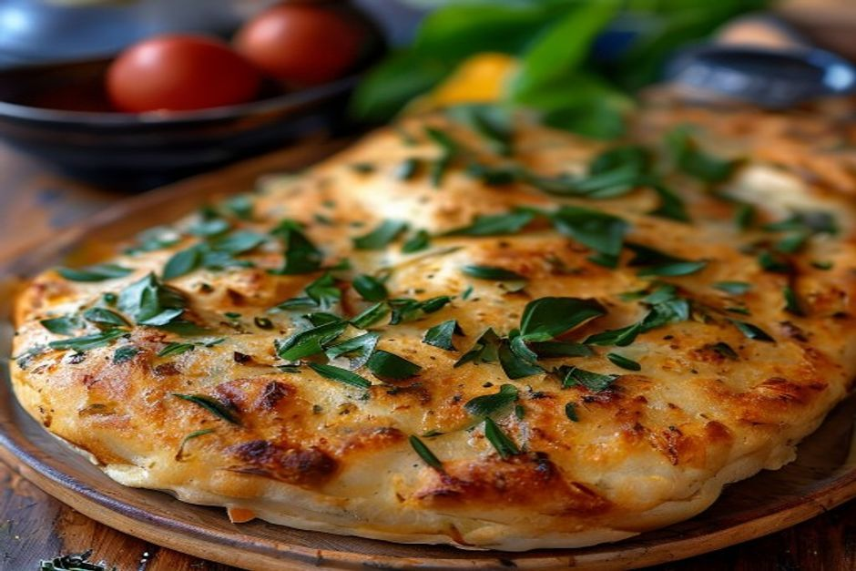
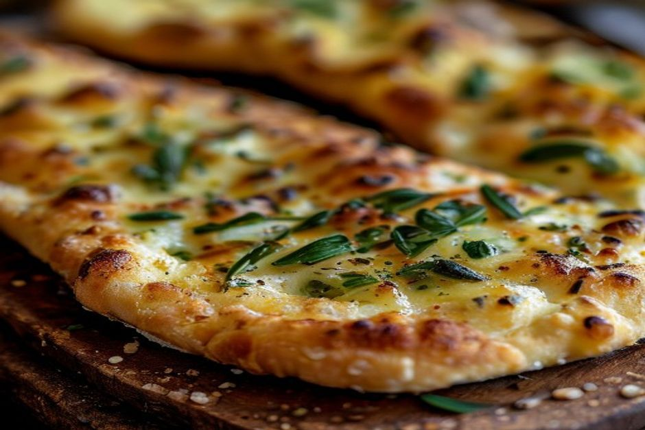

Bolo do caco is Madeira's everyday bread and its most famous snack in one: a dense, chewy sweet-potato flatbread, cooked on a hot volcanic stone, split open at the table and filled with melting garlic butter. It's the first thing that arrives on almost every restaurant table on the island.
What is bolo do caco, exactly?
Bolo do caco is a round, flat wheat bread made with mashed sweet potato worked into the dough, traditionally cooked on a flat stone rather than baked in an oven. The name is misleading if you translate it literally — bolo means "cake" in Portuguese — but it's bread through and through: dense, slightly chewy, with a soft, almost pillowy crumb. It's cut into wedges or split like a bun, and in Madeira it functions less as a side dish and more as the opening act of a meal.

Why is it called "bolo do caco"?
The name comes from the cooking surface, not the ingredients. A caco is a flat shard of basalt lava stone — the kind of dark volcanic rock Madeira is built from — heated until scorching hot and used as a griddle. Home cooks and bakers would flatten the dough by hand directly onto the hot caco, flipping it once, long before modern flat-top griddles took over the job in most kitchens. The word survived even as the actual stone slab mostly gave way to metal.
What's actually in the dough?
The core recipe is simple: wheat flour, boiled and mashed sweet potato, water, yeast, salt and a little sugar, kneaded into a soft, slightly sticky dough. The sweet potato is what makes bolo do caco different from ordinary flatbread — it adds moisture, a faint natural sweetness, and the dense, chewy bite that Madeirans grew up with. Proportions vary from household to household and bakery to bakery, but the sweet potato is non-negotiable; leave it out and you've made a different bread entirely.
How is it cooked?
The dough is divided, shaped into rounds roughly the size of a side plate, then flattened further and cooked directly on a very hot, lightly floured stone or griddle — no oil, no oven. Each side takes only a few minutes, giving the bread a lightly charred, speckled crust and a soft, steaming interior. It's served hot, ideally within minutes of coming off the stone, which is why restaurants tend to make it to order rather than in advance.
How do you eat it — and why the garlic butter matters?
Tradition is precise on this point: the hot bolo do caco is split open like a roll and filled with manteiga de alho, a garlic-and-herb butter that melts into the warm crumb almost instantly. It's typically brought out as a starter, torn and shared before the rest of the meal arrives — closer in role to bread-and-oil at an Italian table than to a dinner roll. Away from restaurants, it's also sold filled like a sandwich at snack bars and market stalls, with grilled meat, cheese or chouriço tucked inside instead of butter.

Where can you find the best bolo do caco in Madeira?
You'll find it on almost every restaurant menu in Funchal's Zona Velha and in the fishing village of Câmara de Lobos, usually listed as a starter and brought out warm without needing to ask twice. Bakeries and stalls around the Mercado dos Lavradores sell it fresh by the piece, and it's a fixture alongside espetada at grill houses across the island — the two are practically a package deal. It's also one of the easiest things to bring aboard a boat: it travels well, needs no cutlery, and pairs naturally with cheese and wine on deck.
Is it the same as mainland Portuguese bread, or the Azores' bolo lêvedo?
No, and the mix-up is common because both bolo do caco and the Azorean bolo lêvedo are round, griddle-cooked breads from Portuguese islands. Bolo lêvedo is lighter and sweeter, closer to an English muffin or brioche, usually split and served with butter and jam at breakfast. Bolo do caco is denser, built around sweet potato rather than a purely wheat-and-egg dough, and its defining pairing is garlic butter, not jam — a savoury, any-time-of-day bread rather than a breakfast sweet.
It looks like bread, tastes faintly like cake, and disappears from the basket faster than either.
If you eat only one thing in Madeira before the main course arrives, make it this — torn open, still warm, with garlic butter running down your fingers.